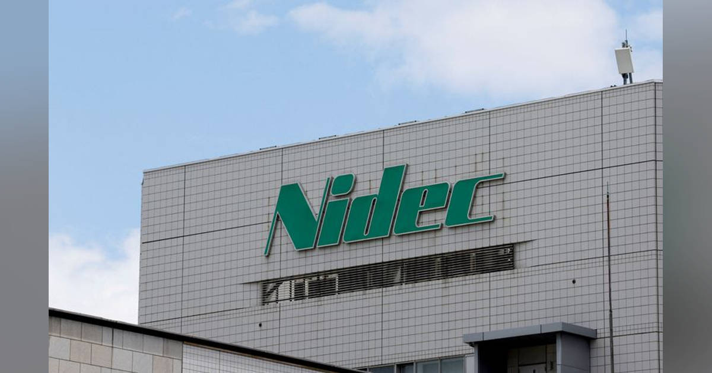

01【トップ激白】「ゼロクリック時代」に100倍の成果を出す方法
発行日時：2026年10月20日 05:30:00 JST
あなたに関係ありそうな理由
検索結果から元記事へ移動しない利用が増えるなか、AIを集客や業務効率だけでなく、コンテンツの権利処理と書き手への還元まで含めて事業に取り込む方法を考える材料になるためです。
概要
この記事は、検索してもリンク先へ進まない「ゼロクリック」が増える環境で、投稿プラットフォームのnoteが成長している理由を加藤貞顕CEOに聞く。ヴァリューズの調査では、検索の68.1％が2026年7月時点で検索結果の先へ進まない状態になった。閲覧数を稼ぐ従来の手法が効きにくくなるなか、noteは創作を続けやすくするという創業時の方針を軸に、使いやすさ、広告の少なさ、安心できる場、創作支援AI、作品の発表機会、推薦機能、課金などを組み合わせてきた。
加藤氏は、新聞・出版などの旧来メディアが広告と課金を併用して収益を得てきた一方、インターネットは誰もが発信できるようになっても、流通と収益化に課題があったと説明する。noteは、投稿の場を用意するだけでなく、読者との出会いや課金、仕事につながる仕組みも整えてきた。社員数はピーク時の198人から151人に減る一方、記事は営業利益率20％の高収益化を伝える。会社の情報や目標をAIが参照できるようにし、各チームにエンジニアを置いて業務フローを見直すなど、全社の仕事を自動化する方針も進めている。
同社はGoogleやNAVERと定期的に協議し、国内外で読者とコンテンツの接点を増やそうとしている。さらに、クリエイターの作品を流通させるだけでなく、映像化や商品化を支援する会社Tales & Co.を設立した。権利はクリエイターが持ち、企画や制作、発信を支えるという。連載小説向けには、ランキングや広告を設けた別サイト「TALES」も用意した。個人の居場所を重視するnoteとは、読者の探し方や作家の挑戦機会が異なるためだ。
AI事業者が記事を利用する場合の権利と対価も大きな論点だ。noteは出版社、報道機関、学術機関などのデータをまとめ、生成AIで利用できる仕組みを目指す。経産省とNEDOのGENIACに採択された計画では、モデルの学習ではなく、回答時に情報を参照するRAGに絞る。利用回数を把握しやすく、権利者との合意や引用停止を扱いやすいからだ。表示コメントには、noteのブランド設計やIP支援への期待がある一方、AIへの提供で対価と権利をどう守るかを問う声もある。注目点は、利用者数や利益だけでなく、AI経由の閲覧が継続読者や書き手への還元につながるかだ。
仕事や会話で使える一言
「AIに参照されることと、書き手に価値が返ることを分けて設計したいですね。」
NewsPicks原文を読む02【新局面】AIが迫る「二重の危機」SaaS企業はどう生き残る？
発行日時：2026年10月20日 05:30:03 JST
あなたに関係ありそうな理由
業務用ソフトを提供する企業が、AIによる機能の代替とサイバー攻撃の両方に直面するなか、専門性・運用・セキュリティをどう顧客価値に結び付けるかを考える手がかりになるためです。
概要
この記事は、「SaaSの死」と呼ばれる業務ソフトの置き換えに、AIを使ったサイバー攻撃という新たな脅威が加わっていると指摘する。コーディングエージェントが普及すれば、これまでSaaSが担った機能を企業が自ら作る動きが広がるかもしれない。一方、外部サービス経由で情報が漏れる事案も増え、企業が契約するシステムを絞り込む可能性がある。専門ソフト企業は、代替される危機とセキュリティの危機に同時に向き合う必要がある。
取材先のドキュサインは、電子署名にとどまらず、契約書の準備、締結後の管理までを一体化するAI契約管理基盤「Docusign IAM」を展開する。契約書から条件や期限を抽出し、交渉時の選択肢を示し、リスクや法令順守の問題を知らせる機能を法務部門だけでなく営業や調達などでも使えるようにする。過去の契約と新しい文書を比較して変更点を見つけ、誰の判断が要るかを整理することで、眠っていた契約情報を実務に生かす狙いだ。
同社の直近四半期売上高は前年同期比9％増で、2024年に始めたIAMは年間売上の15.1％を占める。導入企業は世界で4万社を超えるという。ChatGPTやClaudeなど使い慣れた汎用AIから契約データや業務手順を利用できるよう、MCPサーバーを公開し、試験導入には1万社以上が参加した。ドキュサイン独自のAIエージェントも調達、営業、人事で使われ始め、日本では2026年度内の一般提供を準備している。料金は単純な利用者数やトークン量に限らず、機能ごとの価値とクレジットを組み合わせる。
ただし、契約業務をすべて無人化する計画ではない。重要度の高い契約は人が交渉し、定型的でリスクが低い仕事から自動化するという。人の手順をそのままエージェントに移すのではなく、達成したい目的から業務を組み直す必要もある。機密情報を扱う場合は人が確認し、AIの動きを制御する仕組みを設けるとCEOは説明する。表示コメントには、SaaSの価値は初回の開発ではなく、継続的な改善や保守、セキュリティにあるという見方があった。今後はAI機能の有無だけでなく、専門データ、運用責任、改善速度が選ばれる条件になる。
仕事や会話で使える一言
「AIで作れる機能より、運用と改善を続ける責任が問われますね。」
NewsPicks原文を読む03【要注意】日本カルチャー、2つの「大炎上」が示す教訓
発行日時：2026年10月20日 05:30:02 JST
あなたに関係ありそうな理由
海外の観客に作品を届ける企画では、知名度の高い日本発コンテンツ同士を組み合わせるだけでなく、作品やイベントの文脈とファンの期待を確かめる必要があるためです。
概要
この記事は、日本のアニメや音楽が海外で人気を集める一方、日本発の作品なら何でも歓迎されるわけではないと論じる。配信サービスやSNSを通じて海外の観客に届く機会は増えたが、視聴者が作品やイベントに期待するものを外せば、露出が反発へ変わることもある。その例として、アニメ『スティール・ボール・ラン ジョジョの奇妙な冒険』のエンディング曲と、K-POP中心の公演におけるAdoの出演を取り上げる。
ラッパー千葉雄喜の「死ぬか生きるか」は、Netflix独占配信の同作エンディングテーマに起用された。千葉氏には楽曲「チーム友達」が海外で広がった実績があり、人気アニメと日本人アーティストを組み合わせる企画には、海外へ届ける狙いがあったと記事はみる。しかしジョジョのエンディングには、これまでイエスやサヴェージ・ガーデンなどの洋楽が使われてきた。ファンはその伝統や今回の作品世界を踏まえ、曲の変更を求める反応を示した。制作クレジットにドクター・ルークの名があったことも、批判の理由に加わった。
Adoは所沢のベルーナドームで開かれたK-POP中心の「INKIGAYO LIVE in TOKYO」に出演し、事実上のトリとして「おどるポンポコリン」を歌った。記事によると、観客の反応は歓迎一色ではなく、本人への中傷が広がり、所属事務所は法的措置を警告した。同じ公演に出た幾田りらは途中でその場に合う曲を披露し、同様の強い批判は受けなかったと対比される。記事は、出演者個人よりも、イベントの性格や曲順を決める側が観客の期待をどう見積もったかに注目する。
一方、10月初めに韓国で開かれた日韓アーティストのフェス「XMF」では、Adoが初日のヘッドライナーを務め、オリジナル曲で観客を熱狂させた。K-POPを中心とする既存イベントとは異なり、双方の音楽を楽しむ場として設計された点が違う。表示コメントでは、ファンが守りたい文脈と新しさの両立、企画の責任者が炎上時に説明を担うこと、同じ調整の難しさは企業の商品にも当てはまるという意見が出ている。海外展開では「日本好き」への期待に頼らず、場、観客、作品の歴史を確認し、誰が企画判断の責任を持つのかを明確にする必要がある。
仕事や会話で使える一言
「新しい組み合わせを試す前に、その場で観客が期待する体験を確かめたいですね。」
NewsPicks原文を読む04【新教養】私たちは、100年後に笑われる
発行日時：2026年10月20日 05:30:01 JST
あなたに関係ありそうな理由
AIや都市計画を考えるとき、過去の慣習を未来へ延長していないか、また現在の決定が将来世代の選択肢を狭めないかを点検する材料になるためです。
概要
NewsPicksの「10分読書」は、WIRED日本版編集長・松島倫明氏の著書をもとに、未来を考える際の「フューチャーズ・リテラシー」を紹介する。企業や行政の未来構想では、高層ビル、自動運転車、ドローン、AIエージェントなど似た風景が繰り返される。現在の技術や傾向から筋の通った予測を作ると、実現しそうな未来は描けても、私たちが本当に望む未来や、別の立場の人が望む社会を見落とすことがある。都市の建物のように長く残る決定は、将来の暮らしや選択肢まで固定しかねない。
未来は一つの正解を当てる対象ではなく、異なる人々が参加することで複数の可能性が生まれるというのが記事の考え方だ。ユネスコが提唱した「未来を使う」発想を、予測を現在の判断に生かしながら、その幅を読み解く力として説明する。アフロフューチャリズム、湾岸未来主義、中華未来主義、熱帯未来主義などを挙げ、何を進歩と考えるかは文化や立場で異なると示す。誰かの未来像を全員に共通するものと見なさず、誰が描き、誰がそこに含まれるのかを問う必要がある。
新しい技術を古い枠組みで理解する傾向は「鉄の馬」の例で説明される。19世紀には新しい動力を得ても、移動手段を馬の形で想像した。初期の車が「馬のいない馬車」と呼ばれたように、AIを人間の仕事の模倣だけに使えば、人間だけでは思いつかない用途を見落とすかもしれない。記事は既存の未来像を解体する「脱未来化」と、新しい可能性を作る「再未来化」を紹介する。未来の可能性を円錐状に描く「フューチャーズ・コーン」では、もっともらしい予測だけでなく、望ましい未来や考えにくい未来も視野に入れる。
SFプロトタイピングは、未来を物語として描き、複数の立場の人がそこでどう暮らすかを想像する方法だ。便利さだけでなく、車が普及した後の渋滞のような副作用や、避けたい未来も先に検討できる。記事はまた「グッドイナフ・アンセスター」を引き、完璧な未来を決めて次世代に押し付けるのではなく、問題が起きても修復し、社会を更新できる道具や制度を残すことを重視する。表示コメントにも、未来は予測ではなく参加のための道具だ、既存の問題設定自体を問い直したい、という論点があった。計画では、予測の数字に加え、前提、想定外の影響、将来世代が変更できる余地を確認したい。
仕事や会話で使える一言
「予測の精度だけでなく、誰の未来像を前提にしているかを問い直したいですね。」
NewsPicks原文を読む05ニデック、永守氏や岸田氏ら9人の損賠責任認める 調査委報告書
発行日時：2026年10月20日 18:05:43 JST

あなたに関係ありそうな理由
創業者の権限、取締役会や監査の機能、会計処理への利益目標の影響が企業の信用にどう結び付くかを、調査委員会の報告と会社の対応から考えられるためです。
概要
ロイターによると、ニデックは10月20日、会計不正などを受けた役員責任調査委員会の報告書概要を公表した。報告書は、創業者の永守重信氏について、グループ各社の会計不正の疑いを取締役会や監査役会へ報告し、必要な調査を求めなかったことなどを監視義務違反と認定した。永守氏と岸田光哉前社長ら計9人に、会社法などに基づく損害賠償責任があると指摘した。対象には、元ニデック社長で現在は鴻海精密工業のEV事業責任者を務める関潤氏も含まれる。
ニデックは16日に報告書を受領し、非開示措置を行ったうえで20日に公表した。会社は永守氏や岸田氏らに損害賠償を請求するなど、必要な法的措置を検討し、速やかに対応する方針をすでに示している。記事が伝える報告書は、個別の不正の有無だけでなく、取締役や監査役が疑いを把握した際に、調査や是正へつなげたかを責任判断の軸としている。創業者や経営陣の権限がどのように分担されていたか、監督機関が機能したかが問われる。
報告書は、企業会計と会計監査制度が「公正かつ透明性の高い資本市場」を支える基盤なのに、これまで軽視されてきたと批判した。そのうえで、モーター製造で世界をリードしてきたニデックに対し、第三者委員会の提言を「現在を最後の機会」として実行し、資本市場の信用を回復するよう求めている。会社が法的措置を進めることと、組織として再発防止を実現することは別の課題であり、改善策の実行状況も焦点になる。
表示コメントでは、調査委員会報告書が裁判所の判決ではなく、会社が委嘱した調査結果だという注意が示された。一方、経営者を長年「神様」のように扱ったメディア自身が、その評価や報道を検証すべきだという声や、会計処理への経営責任が市場の信頼に及ぼす影響を重く見る意見もある。報告書の法的認定、会社の今後の判断、株主や取引先からの評価を混同せず、ニデックが提言を実行できるかを追う必要がある。コメントには、調査委員会の報告は会社が委嘱した調査結果で、裁判所の判決や公的な効力とは異なるという指摘もあった。会社が請求対象や責任をどう判断するかは今後の対応として確認したい。コメントには、調査委員会の報告は会社が委嘱した調査結果で、裁判所の判決や公的な効力とは異なるという指摘もあった。会社が請求対象や責任をどう判断するかは今後の対応として確認したい。
仕事や会話で使える一言
「委員会の認定と裁判上の責任を区別し、会社の改善策が機能するかを見たいですね。」
NewsPicks原文を読む